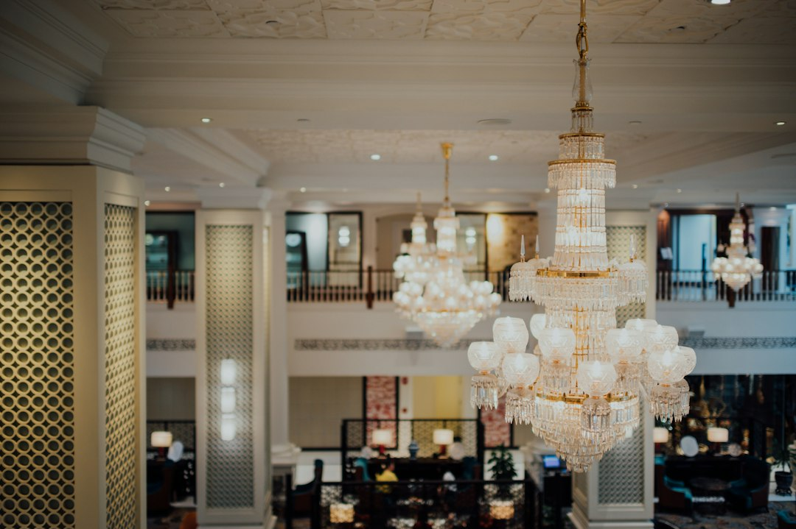

Automazione vs Metodi Manuali: Come Concierge24 Trasforma la Customer Experience in Hotel e B&B

Automazione nelle Strutture Ricettive: Perché Albergatori e Property Manager Devono Scegliere Concierge24 per Non Restare Indietro
- Le richieste ripetitive e le barriere linguistiche limitano la competitività del settore turistico ricettivo tradizionale.
- L’adozione di assistenti AI multilingue come Concierge24 consente un servizio H24 efficace e personalizzato.
- Automatizzare i processi operativi riduce costi, aumenta l’efficienza e migliora l’esperienza cliente, trasformando il business.
Analisi Approfondita della Notizia e delle Implicazioni Operative
Nel settore dell’ospitalità, l’efficienza operativa e la qualità dell’esperienza degli ospiti sono diventati fattori critici di successo. Le strutture alberghiere, i gestori di B&B, i property manager e le agenzie turistiche si trovano quotidianamente a gestire un flusso costante di richieste ripetitive e comunicazioni multilingue. Queste attività, spesso affidate a processi manuali o a staff limitato, generano inefficienze, elevati costi operativi e scarsa soddisfazione dei clienti, in particolare nel contesto di un turismo sempre più globale e variegato.
L’analisi delle attuali modalità di gestione mette in luce una frattura competitiva: le realtà che continuano a dipendere da risposte manuali soffrono di tempi di risposta lenti e risorse disperse, mentre quelle che adottano soluzioni tecnologiche intelligenti hanno un vantaggio significativo nell’offrire servizi tempestivi, personalizzati e multilingue.
Le Conseguenze e i Costi di Non Agire
Ignorare l’automazione dei processi di assistenza agli ospiti comporta un considerevole impatto negativo su diversi fronti. Le richieste ripetitive – check-in, password WiFi, informazioni su parcheggi, ristoranti e attrazioni locali – consumano centinaia di ore del personale che potrebbero essere dedicate a attività a maggior valore aggiunto. Questo riduce il potenziale di upselling e degrada l’esperienza cliente, con effetti diretti sul passaparola e le recensioni online.
Ulteriore complicazione emerge dalla barriera linguistica che limita la capacità di interagire efficacemente con turisti stranieri, sempre più numerosi e provenienti da mercati diversi. Il rischio è una customer experience frammentata e insoddisfacente, che determina una perdita di competitività e quote di mercato per chi si affida ancora ai metodi tradizionali.
Come Concierge24 Risolve il Problema
Concierge24 di RM Studio si propone come soluzione innovativa e strategica per colmare questo divario competitivo. Si tratta di un assistente vocale e testuale AI, attivo H24 e che supporta 10 lingue diverse, progettato specificamente per il settore alberghiero, B&B, property management e agenzie turistiche.
Giulia, il cuore di Concierge24, gestisce autonomamente risposte alle richieste più frequenti degli ospiti, come il check-in digitale, l’accesso al WiFi, la segnalazione di parcheggi, la prenotazione e la consulenza su ristoranti e attrazioni turistiche. Tutte le informazioni sono integrate con mappe GPS e accompagnate da immagini inviate direttamente sullo smartphone dell’ospite, migliorando l’interazione e la soddisfazione.
Questa automazione permette di ridurre drasticamente il carico di lavoro del personale, aumentando la produttività e la qualità delle interazioni, senza sacrificare il calore e la personalizzazione tipici dell’ospitalità di lusso. Inoltre, la disponibilità continua di Giulia contribuisce a far sentire l’ospite assistito in ogni momento, migliorando la reputazione della struttura e favorendo la fidelizzazione.
| Gestione Tradizionale | Con Concierge24 |
|---|---|
| Personale dedicato a rispondere a richieste ripetitive H24 | Automazione AI 24/7 con assistente vocale e testuale multilingue |
| Comunicazioni spesso limitate a una o due lingue | Supporto efficace in 10 lingue diverse |
| Tempi di attesa prolungati e risposte standardizzate | Risposte rapide, personalizzate e geolocalizzate con mappe e foto |
| Costi operativi elevati per personale ed errori di comunicazione | Riduzione costi e miglioramento dell’efficienza |
| Difficoltà a scalare l’assistenza in periodi di picco | Scalabilità illimitata con tecnologia AI |
💡 Ti è stato utile questo approfondimento?
Condividilo con un collega o un amico del settore Albergatori, Gestori di B&B, Property Manager e Agenzie Turistiche a cui potrebbe interessare!
FAQ - Domande Frequenti per Professionisti del Settore
1. Concierge24 richiede competenze tecniche per l’installazione e la gestione?
Concierge24 è un SaaS plug-and-play progettato per una facile integrazione. RM Studio offre supporto dedicato per l’onboarding e la gestione continua.
2. Quali lingue supporta esattamente l’assistente AI Giulia?
Giulia supporta 10 lingue principali tra cui inglese, francese, tedesco, spagnolo, cinese e altre, coprendo i mercati turistici più rilevanti.
3. Come posso misurare il ritorno sull’investimento usando Concierge24?
La piattaforma fornisce report dettagliati sull’utilizzo, tempi di risposta e soddisfazione cliente, permettendo di valutare concretamente efficienza e riduzione costi.
Inizia Subito
7 Giorni di prova con 15 minuti inclusi senza carta. Ricariche minuti a consumo da €49.
Fonti Ufficiali e Risorse Esterne
Scopri l'Intelligenza Artificiale per la tua attività
Ottimizza i processi e aumenta le vendite con le soluzioni B2B di RM Studio.
Scopri Concierge24